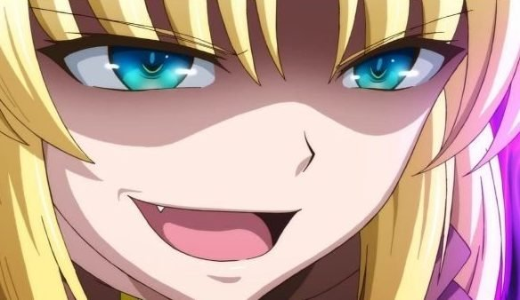
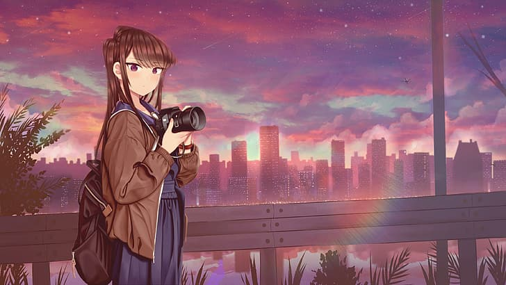
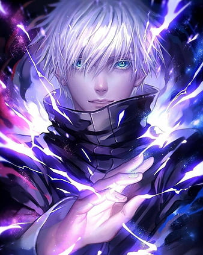

.png)
WHY DID EREN TURNED EVIL?
Eren Jaeger from Attack On Titan has one of the darkest character developments throughout the series. As the series comes to an end, fans are looking back at their favorite anime lead’s past. Eren went through a series of horrific events and did not move on or take a lesson from any of them. This particular detail is seen in his current actions as well. From his desire to join Survey Corps to becoming a mass murderer, Eren has changed drastically. Now, what really is the cause of it? Why Did Eren Jaeger Turn Evil? Lastly, was he ever good to begin with? Undeniably, Eren is an interesting character. The series begins with one of the biggest causes of Eren’s growth, the loss of his mother. Ever since his birth, Eren had hated Titans, but Carla’s death is the leading cause for him to loathe the creatures. Initially, Eren saw the Survey Corps and dreamt of fighting Titans. However, this incident brought him closer to the gripping reality. However, this is not it, and there has been an event before this that shows Eren’s true self.
To answer this question, we must go back to the original source material. A recent chapter of the manga features a segment where Mikasa questions if she ever knew the true self of Eren or just a side of him. Eren saved Mikasa from the killers of her parents at the time where she had lost all hopes. He offers her a red scarf that is still placed on her neck. Mikasa thought that Eren’s advance on Marley that kills innocents along his way is a consequence of being controlled and not his willing actions. However, the saying that ‘Eren has changed’ may not be accurate. Eren never changed, and his true goals are finally forming a shape. Eren loves his family and friends and his nation Paradis, and now his love has gone to the point of destroying the reason behind their problems. Hence, now Eren has a plan chalked out for his worst enemies. However, he leads on to be the final antagonist.

10+ Anime TV Shows Airing January 2022: What To Expect…
- 1. IRODORIMIDORI (Jan 4th 2022)
- 2. Leadale no Daichi nite (Jan 5th 2022)
- 3. Hakozume: Koban Joshi no Gyakushuu (Jan 5th 2022)
- 4. ORIENT (Jan 6th 2022)
- 5. Tokyo 24-ku (Jan 6th 2022)
- 6. Saiyuki RELOAD ZEROIN (Jan 6th 2022)
- 7. Shuumatsu no Harem (Jan 7th 2022)
- 8. Slow Loop (Jan 7th 2022)
- 9. Karakai Jouzu no Takagi-san 3 (Jan 8th 2022)
- 10. CUE! (Jan 8th 2022)
- 11. Futsal Boys!!!!! (Jan 9th 2022)
- 12. Shingeki no Kyojin: The Final Season Part 2 (Jan 10th 2022)
Netflix Releases "Translator's Notes" For Komi Can't Communicate Anime

The Netflix Anime YouTube account released a "Translator's Notes" video last Thursday explaining the Japanese language puns for the following character names featured in the Komi Can't Communicate anime: Shoko Komi, Hitohito Tadano, Agari Ueno, Ren Yamai, Najimi Osana, and Makeru Yadano.The anime premiered on TV Tokyo and other channels on October 6 at 12:00 a.m (effectively, October 7). The anime started streaming exclusively on Netflix in Japan on October 7. Netflix debuted the anime outside of Japan on October 21, two weeks after its Japanese premiere, with weekly new episodes. Netflix is streaming the anime in over 190 countries and territories in eight languages dubbed and 31 languages subtitled. Shortly after the anime's global debut, fans criticized the English subtitles for not translating parts of Tadano and Komi's blackboard conversation in episode 1.
The 5 Best Underrated Anime of 2021 You Need to Watch
- 5. Kageki Shoujo!! (Opera Girl!)
- 4. Night Head 2041
- 3. Kyuuketsuki Sugu Shinu (The Vampire Dies in No Time)
- 2. Muteking the Dancing Hero
- 1. Mars Red
Jujutsu Kaisen 0 Unveils Heart-wrenching New Trailer!
Beginning with Yuta thanking Rika for all she's done for him, the trailer also features an original battle scene created for the film. Inspired by Gege Akutami's dark fantasy manga Jujutsu Kaisen, the film adapts prequel manga Tokyo Metropolitan Curse Technical School, also published as Volume 0. The story follows Yuta, a boy haunted by his childhood sweetheart Rika ever since he saw her die in a car accident. The film premiered at midnight on December 24 and went on to officially become a "big hit," having sold over 4.3 million tickets and raked in more than 5.8 billion yen just 11 days after its debut, according to its official Twitter account. Jujutsu Kaisen 0 is currently screening at theaters in Japan. Information on an international release is yet to come.
TRAILER..
ANIME IS AN EMOTION
If you haven’t watched any anime in your lifetime, you should definitely try to watch some famous anime. Begin with short anime. Choose your favourite genre and just enjoy.
MY PERSONAL FEELINGS FOE ANIME: ANIME IS NOT JUST SOME JAPANESE CARTOON...IT TAUGHT ME HOW TO LIVE..IT TAUGHT ME PAIN..SUFFERING..LOVE..FRIENDSHIPS..ADVENTURES..IT TAUGHT ME EVERYTHING I COME TO KNOW TODAY!REASON WHY I STILL GREW UP IS FOR ANIME!!